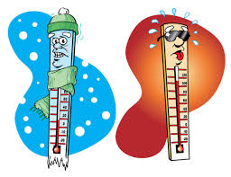

Franklin Breaks Record

And it came to pass in the thirty and fourth year, in the first month, on the fourth day of the month, there arose a great storm, such an one as never had been known in all the land. And there was also a great and terrible tempest; and there was terrible thunder, insomuch that it did shake the whole earth as if it was about to divide asunder. And there were exceedingly sharp lightnings, such as never had been known in all the land. (3 Nephi 8:5–7)
Great weather to hit the trails
And it came to pass that they journeyed many days in the wilderness, and they fasted much, and prayed much, that the Lord would grant unto them a portion of his Spirit to go with them, and abide with them. ALMA 12:14 [17:9]: And it came to pass when they had arrived in the borders of the land of the Lamanites, that they separated themselves, and departed one from another, trusting in the Lord, that they should meet again at the close of their harvest: for they supposed that great was the work which they had undertaken. ALMA 12:21 [17:13]